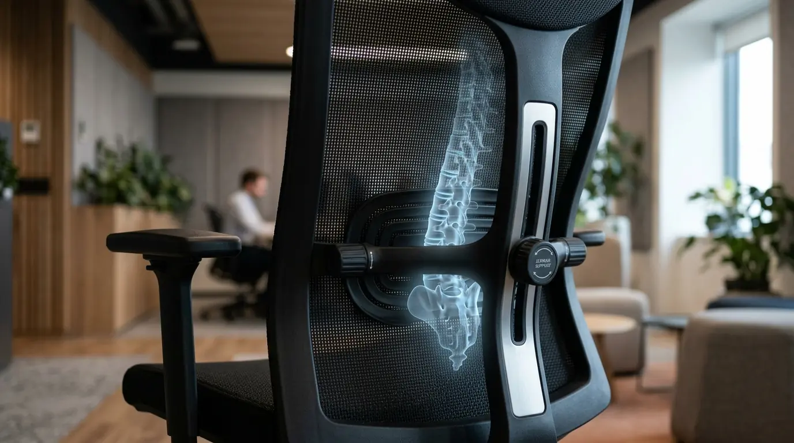

Mengapa Lumbar Support Kursi Kantor Sangat Krusial untuk Staff?
Lumbar support kursi kantor menyangga wilayah tulang belakang L1-L5 guna mengurangi beban tekanan piringan antar-tulang belakang saat staff duduk bekerja seharian.
Duduk selama lebih dari enam jam sehari tanpa penopang punggung yang memadai menyebabkan tekanan berlebih pada otot lumbal. Menurut data Occupational Safety and Health Administration (OSHA) periode 2023-2025, Gangguan Muskuloskeletal (MSDs) menyumbang 33% dari seluruh kasus cedera di tempat kerja. Kondisi ini berpotensi menurunkan fokus serta kecepatan kerja staff secara signifikan.
Penerapan lumbar support kursi kantor secara konsisten membantu menyebar beban tubuh secara merata. Hasil studi International Journal of Industrial Ergonomics pada tahun 2024 menunjukkan bahwa intervensi kursi ergonomis berfasilitas penyangga lumbal mampu meningkatkan produktivitas harian pekerja hingga 17,5%. Ketika tulang belakang tertopang secara optimal, kelelahan fisik dapat diminimalkan sehingga konsentrasi staff tetap terjaga sepanjang jam kerja.
Bagi manajemen perusahaan, memprioritaskan kesehatan fisik staff melalui fasilitas kerja yang tepat bukan sekadar pemenuhan standar K3, melainkan langkah strategis dalam menjaga stabilitas kinerja tim. Investasi pada pengadaan penyangga pinggang yang tepat secara langsung berdampak positif pada retensi dan kepuasan kerja karyawan. Untuk melengkapi fasilitas ruang kerja yang ideal, Anda dapat mengandalkan pasokan grosir dari distributor resmi Perlengkapan Kantor kami.
- Area lumbal (tulang punggung bagian bawah) menanggung sekitar 60-70% total beban tubuh bagian atas saat berada dalam posisi duduk tegak.
- Tanpa lumbar support yang menopang lekukan alami lordotik, tekanan intradiskal pada piringan L4-L5 meningkat hingga 140% dibanding saat berdiri seimbang.
- Penggunaan kursi dengan penopang pinggang aktif membantu melancarkan sirkulasi oksigen ke otak karena postur dada tetap terbuka bebas.
Bagaimana Cara Kerja Penyangga Lumbal dalam Mencegah Kelelahan Kerja?
Penyangga lumbal bekerja menopang kelengkungan lordotik alami pada punggung bawah sehingga tekanan gravitasi pada tulang belakang terdistribusi sempurna.
Saat seseorang duduk tanpa sandaran yang proporsional, kecenderungan untuk membungkuk akan meningkat. Posisi membungkuk ini menempatkan beban hingga 1,5 hingga 2 kali lipat lebih besar pada piringan intervertebral dibandingkan posisi berdiri. Lumbar support kursi kantor mengisi celah kosong antara sandaran kursi dan tulang belakang bagian bawah, mencegah hilangnya kelengkungan alami tersebut.

Detail penyangga pinggang lumbar support pada kursi kerja staff korporat yang dapat disesuaikan tingkat ketinggian dan kedalamannya.
Fitur penyesuaian (adjustable lumbar support) memungkinkan penyangga disesuaikan dengan tinggi badan dan lekuk tubuh individual staff. Fleksibilitas ini sangat krusial karena setiap karyawan memiliki dimensi tubuh yang berbeda. Penyangga yang dapat diatur secara presisi memastikan otot-otot punggung tidak bekerja ekstra keras hanya untuk mempertahankan posisi duduk tegak.
Efek jangka panjang dari penggunaan penyangga yang tepat adalah berkurangnya mikrotrauma pada jaringan otot dan sendi. Staff dapat bekerja lebih nyaman tanpa harus sering merubah posisi duduk akibat rasa pegal atau nyeri yang mengganggu aliran kerja.
Apa Saja Dampak Finansial Bagi Perusahaan yang Mengabaikan Ergonomi Kursi Kerja?
Mengabaikan ergonomi kursi kerja memicu peningkatan klaim kesehatan, penurunan produktivitas, serta kerugian finansial akibat tingginya tingkat absensi karyawan.
Kerugian akibat nyeri punggung tidak hanya dirasakan oleh individu karyawan, tetapi juga oleh struktur keuangan perusahaan secara keseluruhan. Berdasarkan laporan Global Corporate Wellness Index 2025, perusahaan yang mengabaikan standar ergonomi mengalami kerugian rata-rata sebesar 12% dari total biaya produktivitas per tahun akibat presenteeism—kondisi di mana karyawan hadir di kantor namun tidak dapat bekerja optimal karena rasa sakit fisik.
Tabel berikut menggambarkan perbandingan dampak antara penggunaan kursi non-ergonomis dengan kursi kantor ber-lumbar support:
| Metrik Evaluasi | Kursi Non-Ergonomis | Kursi dengan Lumbar Support |
|---|---|---|
| Tingkat Keluhan Punggung | Tinggi (Di atas 60% staff) | Rendah (Di bawah 15% staff) |
| Tingkat Fokus & Efisiensi | Cepat menurun setelah 3 jam | Stabil sepanjang jam kerja |
| Biaya Absensi & Kesehatan | Peningkatan klaim medis harian | Peningkatan efisiensi biaya operasional |
| Daya Tahan Penggunaan | Cepat rusak dan busa kempes | Konstruksi kokoh dan tahan lama |
Melakukan pembaruan pada unit duduk staff menggunakan produk yang dirancang secara teknis merupakan keputusan efisiensi yang rasional. Melalui penyediaan sarana kerja dari penyedia Perlengkapan Kantor tepercaya, perusahaan secara langsung menekan potensi kerugian operasional tak terduga di masa depan.
- Temukan koleksi kursi staff dengan penyangga lumbal presisi pada katalog kursi kantor kami.
- Pelajari langkah praktis meredakan ketegangan tubuh pada artikel mengatasi sakit pinggang saat WFH.
- Kombinasikan kursi ergonomis dengan meja dinamis lewat ulasan paket standing desk kursi ergonomis.
Bagaimana Cara Memilih Lumbar Support Kursi Kantor yang Tepat untuk Korporasi?
Memilih lumbar support kursi kantor yang tepat memerlukan evaluasi terhadap kemudahan penyesuaian, kualitas material sandaran, serta reputasi penyedia perlengkapan kantor.
Proses seleksi unit kursi untuk staff sebaiknya mempertimbangkan kriteria teknis berikut agar memberikan manfaat jangka panjang bagi perusahaan:
- Kemudahan Opsi Penyesuaian: Pilih model yang memungkinkan pengaturan naik-turun (height adjustment) serta kedalaman (depth adjustment) agar cocok untuk berbagai postur tubuh staff.
- Material Jaring (Mesh) Tahan Lama: Bahan mesh berkualitas tinggi memberikan sirkulasi udara yang baik sehingga punggung staff tidak terasa panas atau berkeringat selama penggunaan berjam-jam.
- Kepadatan Busa Penyangga: Jika menggunakan model busa (molded foam), pastikan tingkat kepadatannya tinggi agar tidak mudah kempes dalam jangka waktu panjang.
- Sertifikasi Keamanan dan Ketahanan: Pastikan produk telah melewati uji keandalan standar internasional seperti BIFMA atau ISO untuk menjamin keamanan penggunaan korporat.
- Dukungan Layanan Purna Jual: Bekerjasamalah dengan penyedia perlengkapan kantor resmi yang menyediakan garansi komprehensif serta ketersediaan suku cadang.
Dengan memastikan kriteria teknis di atas terpenuhi, perusahaan Anda akan mendapatkan nilai investasi maksimal dari setiap unit kursi yang dibeli melalui Perlengkapan Kantor.
Apa Kesalahan Umum Saat Melakukan Pengadaan Kursi Kerja Staff?
Kesalahan umum dalam pengadaan kursi kerja meliputi memprioritaskan harga murah tanpa memperhitungkan faktor ergonomi, garansi, serta kualitas material jangka panjang.
Banyak divisi pengadaan tergiur oleh penawaran harga kursi yang sangat murah tanpa memeriksa keberadaan fitur lumbar support kursi kantor yang terstandarisasi. Akibatnya, kursi mengalami kerusakan dalam waktu singkat dan busa sandaran melandai, sehingga tidak lagi mampu menopang tulang belakang staff dengan benar. Pengeluaran untuk penggantian unit baru pada akhirnya justru membengkak.
Kesalahan lainnya adalah tidak menguji fleksibilitas penyesuaian kursi sebelum melakukan pembelian dalam jumlah besar. Kursi yang bersifat one-size-fits-all tanpa penyangga lumbal yang bisa diatur sering kali tidak cocok untuk sebagian besar karyawan, yang pada akhirnya memicu kembali keluhan kesehatan punggung di ruang kerja.
Pastikan proses pengadaan melibatkan pengujian sampel dan konsultasi langsung dengan penyedia Perlengkapan Kantor tepercaya guna menghindari kerugian akibat pemilihan unit yang kurang tepat.
Pertanyaan Populer Seputar Lumbar Support Kursi Kantor (FAQ)
Kesimpulan Praktis
Penerapan lumbar support kursi kantor merupakan langkah krusial dalam menciptakan lingkungan kerja korporat yang sehat, produktif, dan efisien. Penyangga lumbal yang dirancang secara tepat terbukti secara medis dan operasional mampu menekan risiko cedera tulang belakang serta meningkatkan fokus harian staff.
Jangan biarkan penurunan efisiensi kerja mengganggu pertumbuhan bisnis Anda. Hubungi tim ahli kami sekarang di Perlengkapan Kantor untuk mendapatkan penawaran khusus pengadaan kursi ergonomis dan perlengkapan kantor berkualitas tinggi yang sesuai dengan kebutuhan perusahaan Anda.

Penulis: Tim Ahli Ergonomi Kantor
Divisi riset ergonomi dan spesialis furnitur kerja perkantoran di Perlengkapan Kantor. Berpengalaman mendesain solusi ruang kerja yang nyaman, menekan risiko cedera muskuloskeletal, dan mengoptimalkan efisiensi operasional korporat. Ditinjau oleh Konsultan Kesehatan Kerja & Efisiensi Operasional.